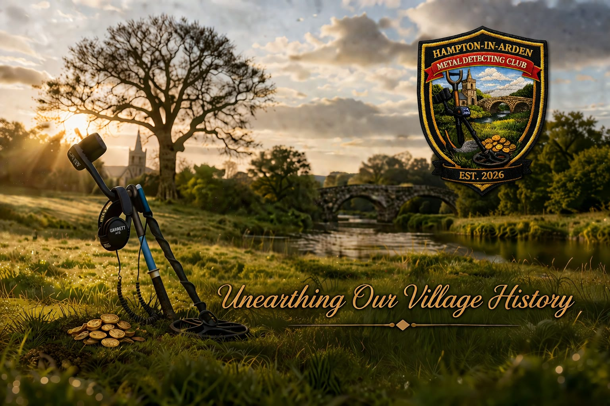

Our Club
Bringing local history to life.

Hampton In Arden Metal Detecting Club was formed by a small group of local detectorists with a shared interest in discovering, recording and preserving the history beneath our feet.
Our members detect on permissioned land around Hampton, Barston and the surrounding area, and the finds already recovered span many periods of local history — from Roman and medieval objects to more recent everyday items.
For us, metal detecting is about more than finding interesting objects. Every find has a story, and part of the enjoyment is understanding what it can tell us about the people who lived and worked here before us.
More than a hobby
Stories beneath our feet.
For us, metal detecting is not simply about finding old objects. Each discovery can add another small piece to the story of the people who lived and worked in this area before us.
We want to enjoy the hobby while helping to record and preserve local history, sharing what we learn with the wider community wherever we can.
Our future
A local club with a long-term purpose.
As the club develops, we hope to document more of the area's discoveries, build a useful record of local finds and, eventually, make some of that history accessible to the wider village.
Our members have different levels of experience, but the common thread is curiosity, respect for the land and an interest in understanding the past.
Landowners
Could your land hold a story?
We are always interested in speaking with local landowners who may be open to allowing responsible metal detecting on their land.
Club contact details will be added here shortly.